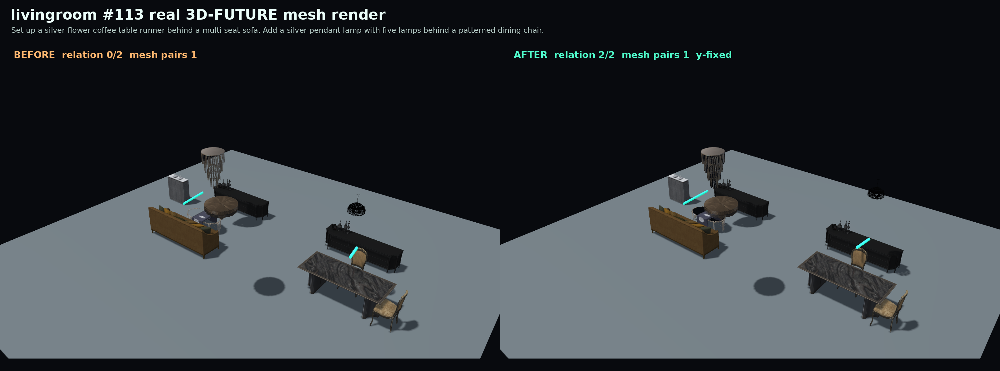

总总结论
最安全的 paper claim 是： Relation-Aware InstructScene identifies a graph-to-layout grounding gap and introduces a training-free relation verifier-repair layer that improves explicit spatial relation realization on existing InstructScene validation splits while preserving object height and controlling mesh collision with a collision-gated variant.
目前已经能支撑一篇 paper seed：有方法、有 ablation、有 multi-seed、有 mesh collision、有高度诊断、有真实 3D-FUTURE mesh 展示、有 NeurIPS 模板初稿。它还不是“可直接主会稳投”的终稿，因为强外部 baseline 和正式人类视觉质量评估还没有完成。
创新点
1. 关系实现从 graph-level 推到 layout-level
以往很多 pipeline 关注 scene graph 是否包含关系，但最终物体坐标可能不满足关系。我们的核心问题是 final realized relation，而不是只看 symbolic graph。
2. 不新增 benchmark，不新增人工标注
所有实验使用现有 InstructScene validation prompts、官方 checkpoint 和已有 evaluator，避免“自己造数据自己赢”的风险。
3. Plug-in verifier-repair layer
方法不替换原生成模型，而是在输出后解析、验证、修复，训练自由，适合作为 pretrained generator 的关系一致性控制模块。
4. Floor-prior 修复与高度保持
最终版本只移动 x/z 地面平面，不改 y 高度，解决了早期家具、椅子、沙发腾空的问题。
5. Collision-gated 选择
当 mesh collision pair 增加时回退到 baseline layout，使 mesh-validity claim 更安全。
6. 分层评估体系
不只报 relation acc，还报 movement、mesh collision、multi-seed、height diagnostics、visual diagnostics、strong baseline feasibility。
我们的方法
方法整体是一个 training-free post-generation module，坐在 InstructScene 生成结果之后。
Direct y-fixed repair
直接修复沿 x/z 移动物体并保持 y 不变。它 relation gain 很高，但平均移动幅度接近 2 米，容易让真实 mesh 展示显得不自然，所以更适合做 internal baseline。
Floor-prior repair
当前主方法在候选位移中选择更温和的修复：限制最大移动范围，考虑 overlap penalty，保留原始高度。推荐主配置是 floor_prior_max1.8_mesh_p2_close0.75_far1.6。
Collision-gated repair
如果 repaired layout 的 FCL mesh collision pairs 比 baseline 更多，就回退 baseline。这让 mesh claim 更安全，但论文中必须说明这是 verifier-selection/fallback，不是纯生成器自动学到了 collision-free synthesis。
实验结果
主结果：Floor-prior 在三个房间上都提升关系满足率
| Room | Baseline | Floor-prior | Gain | Avg move | Mesh delta |
|---|---|---|---|---|---|
| Bedroom | 0.7388 | 0.8408 | +0.1020 | 0.7837 | +0.0029 |
| Dining room | 0.5948 | 0.7286 | +0.1338 | 0.7315 | +0.0008 |
| Living room | 0.5510 | 0.6939 | +0.1429 | 0.8808 | +0.0008 |
解释：关系提升稳定，但 ungated mesh delta 仍有轻微正值，所以 mesh collision claim 应该使用 collision-gated 结果。
Direct y-fixed：提升更大，但移动太激进
| Room | Direct gain | Avg move | 结论 |
|---|---|---|---|
| Bedroom | +0.1347 | 2.2101 | 强 baseline，但移动过大。 |
| Dining room | +0.1896 | 1.9694 | 关系提升高，但几何副作用更明显。 |
| Living room | +0.1973 | 2.2834 | 证明 repair 有效，但不适合作主方法。 |
Collision-gated：mesh claim 的核心证据
| Room | Baseline | Repair | Gated | Gated gain | Base mesh | Gated mesh | Fallback |
|---|---|---|---|---|---|---|---|
| Bedroom | 0.7388 | 0.8408 | 0.8163 | +0.0776 | 0.0702 | 0.0683 | 6 |
| Dining room | 0.5948 | 0.7286 | 0.6729 | +0.0781 | 0.0342 | 0.0336 | 15 |
| Living room | 0.5510 | 0.6939 | 0.6395 | +0.0884 | 0.0313 | 0.0310 | 14 |
解释：gated 后 relation gain 仍然为正，而且 mesh pair rate 低于 baseline。这是“控制 mesh collision 不增加”的主要证据。
Multi-seed 稳定性
| Room | Mean repair gain | Std | Mean gated gain | Mean gated mesh delta |
|---|---|---|---|---|
| Bedroom | +0.1061 | 0.0058 | +0.0803 | -0.0020 |
| Dining room | +0.1462 | 0.0093 | +0.0867 | -0.0008 |
| Living room | +0.1270 | 0.0125 | +0.0703 | -0.0003 |
高度诊断
视觉结果与展示素材
| Showcase | Examples | Relation gain | Mesh-pair delta | CLIP delta | SSIM |
|---|---|---|---|---|---|
| Old direct y-fixed showcase | 3 | +1.333 | 0.000 | -0.0165 | 0.8358 |
| New floor-prior showcase | 15 | +1.400 | -0.267 | +0.0027 | 0.9065 |
新 floor-prior 展示比旧 direct 展示更适合论文：更多样例、更高 SSIM、mesh pairs 平均下降，且关系数提升稳定。



更多展示： floor_prior_showcase.html， a_conf_visual_quality.html， a_conf_floor_prior_results.html。
能说什么，不能说什么
可以强 claim
- 在现有 InstructScene splits 上，显式空间关系 realization 明显提升。
- Floor-prior 比 direct repair 更适合主方法，因为移动更受控。
- Collision-gated variant 在 mesh collision pair rate 不增加的情况下仍保留正 relation gain。
- 方法保持 y 高度不变，修复了家具腾空问题。
- Multi-seed 结果稳定。
不能 claim
- 不能说超过 ReSpace / SDGScenes。
- 不能说 first relation-aware 3D scene generation。
- 不能说视觉质量全面更好。
- 不能说处理所有隐式 commonsense relation。
- 不能说完整解决物理支撑、可达性和功能合理性。
产物、归档与论文初稿
| 产物 | 位置 | 说明 |
|---|---|---|
| 完整实验归档 | E:/research_worldmodel/experiment_archive/relation_aware_instructscene_20260530 | 596 个文件，约 687.83 MB，含 raw eval、表格、图、文档、脚本、checksum。 |
| NeurIPS 初稿 PDF | E:/research_worldmodel/paper/neurips_ra_instructscene/main.pdf | 已编译成功，8 页。 |
| 中文 Notion 风格报告 | E:/research_worldmodel/docs/relation_aware_instructscene_notion_report_zh.md | 完整中文文字版报告。 |
| Floor-prior 展示页 | visual/floor_prior_showcase.html | 15 个真实 mesh before/after 展示。 |
| 视觉诊断页 | visual/a_conf_visual_quality.html | CLIP/SSIM/mesh pair 诊断。 |
下一步建议
- 把 floor-prior showcase 中 3 到 6 个图整理成论文 Figure 2。
- 把 NeurIPS checklist 填完整，补 compute、seed、数据许可、局限性。
- 若目标是 A 会主会，继续做 ReSpace / SDGScenes 的 shared-protocol comparison，或者明确把论文定位成 verifier-repair module。
- 若想 claim 视觉质量，补 human preference study 或更正式的 perceptual evaluation。